Conto cointestato: rischi patrimoniali e alternative per coppie ed eredi
Il conto cointestato è spesso scelto per comodità familiare, ma nasconde effetti giuridici sottovalutati: dalla presunzione di parità delle quote all'aggressione da parte dei credi…
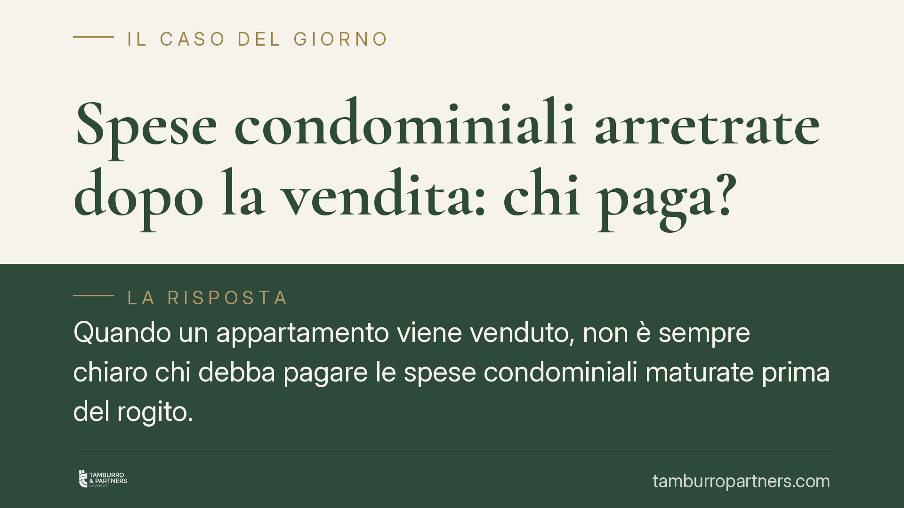
Spese condominiali arretrate dopo la vendita: chi paga?
Quando un appartamento viene venduto, non è sempre chiaro chi debba pagare le spese condominiali maturate prima del rogito. La distinzione tra spese ordinarie e straordinarie e la …
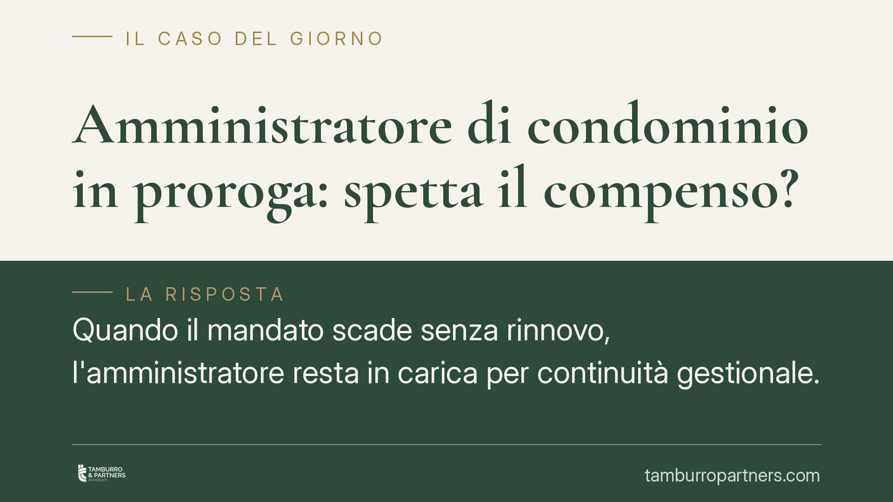
Amministratore di condominio in proroga: spetta il compenso?
L'amministratore che continua a operare dopo la scadenza del mandato, in regime di prorogatio, non ha diritto a un compenso ulteriore: gli spetta solo il rimborso delle spese antic…
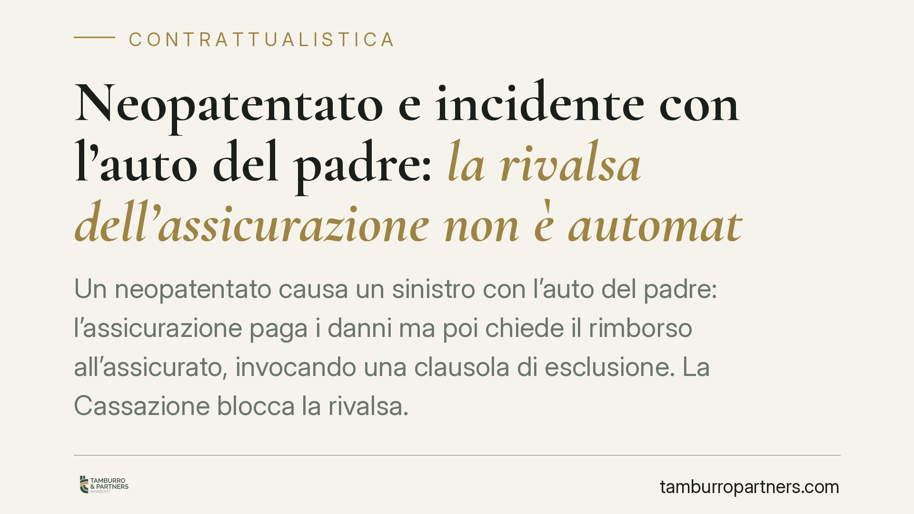
Neopatentato e incidente con l'auto del padre: la rivalsa dell'assicurazione non è automatica
Un neopatentato causa un sinistro con l'auto del padre: l'assicurazione paga i danni ma poi chiede il rimborso all'assicurato, invocando una clausola di esclusione. La Cassazione b…
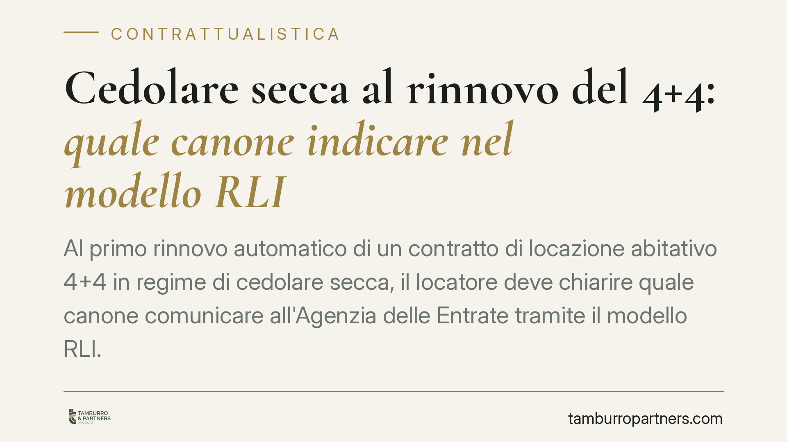
Cedolare secca al rinnovo del 4+4: quale canone indicare nel modello RLI
Al primo rinnovo automatico di un contratto di locazione abitativo 4+4 in regime di cedolare secca, il locatore deve chiarire quale canone comunicare all'Agenzia delle Entrate tram…
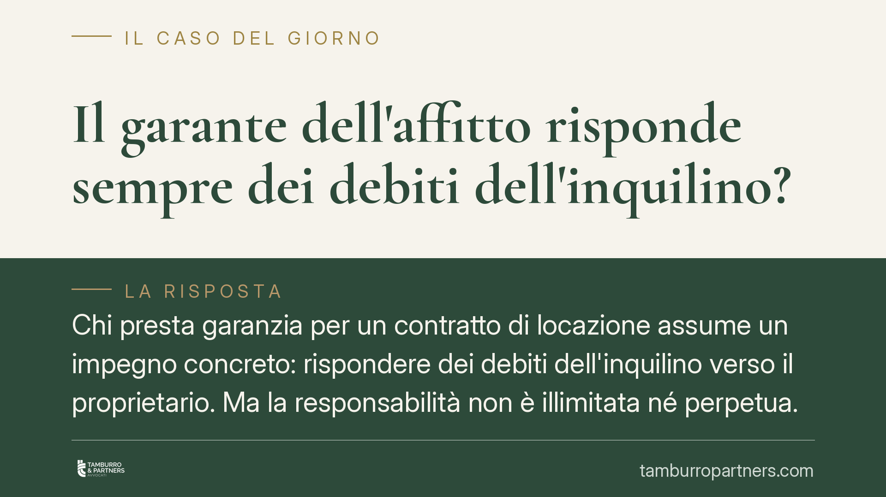
Il garante dell'affitto risponde sempre dei debiti dell'inquilino?
Chi presta garanzia per un contratto di locazione assume un impegno concreto: rispondere dei debiti dell'inquilino verso il proprietario. Ma la responsabilità non è illimitata né p…
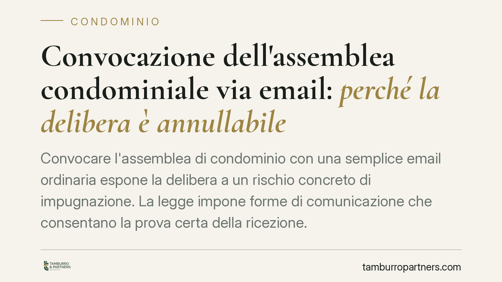
Convocazione dell'assemblea condominiale via email: perché la delibera è annullabile
Convocare l'assemblea di condominio con una semplice email ordinaria espone la delibera a un rischio concreto di impugnazione. La legge impone forme di comunicazione che consentano…
Telecamera nell'androne condominiale: quando è possibile installarla
Installare una telecamera che riprende l'androne o le scale non è una decisione individuale. La legge distingue tra la videocamera puntata sulla propria porta e quella che inquadra…
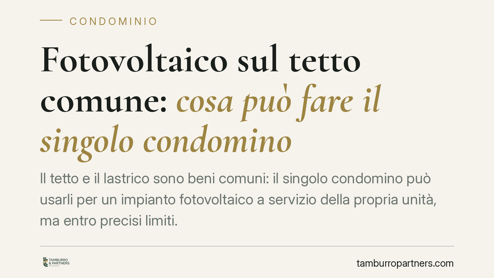
Fotovoltaico sul tetto comune: cosa può fare il singolo condomino
Il tetto e il lastrico sono beni comuni: il singolo condomino può usarli per un impianto fotovoltaico a servizio della propria unità, ma entro precisi limiti. Occorre distinguere t…
Il test del carrello simulato non giustifica il licenziamento del cassiere
Alcuni datori di lavoro nel commercio ricorrono al "carrello simulato": un finto acquisto costruito per verificare l'onestà del cassiere. Quando la simulazione diventa una trappola…
Contratto di convivenza: cosa si può regolare e cosa no
Il contratto di convivenza permette alle coppie di fatto di disciplinare i propri rapporti economici. Ma non ogni aspetto è negoziabile: alcuni diritti, come quelli sanitari e succ…
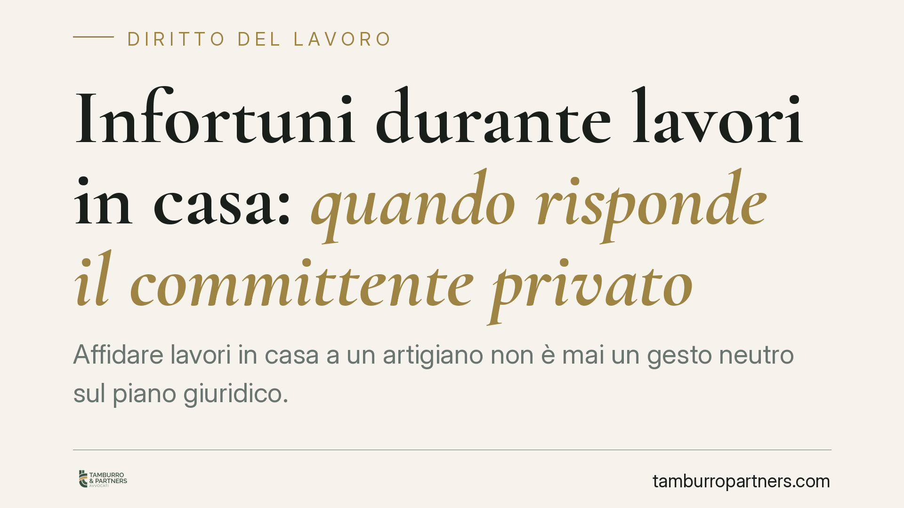
Infortuni durante lavori in casa: quando risponde il committente privato
Affidare lavori in casa a un artigiano non è mai un gesto neutro sul piano giuridico. La giurisprudenza ha più volte affermato che il committente privato, pur non diventando datore…
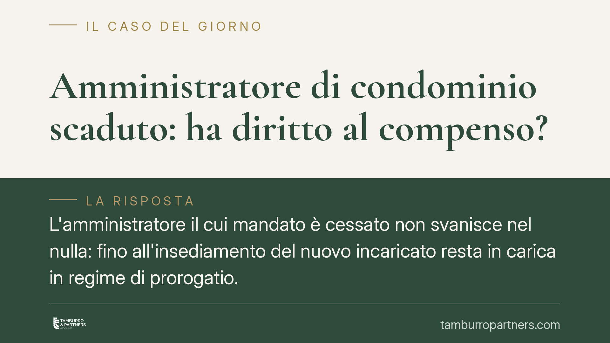
Amministratore di condominio scaduto: ha diritto al compenso?
L'amministratore il cui mandato è cessato non svanisce nel nulla: fino all'insediamento del nuovo incaricato resta in carica in regime di prorogatio. In questa fase conserva il dir…
Ferie non godute dei dirigenti: quando spetta l'indennità sostitutiva
La giurisprudenza consolidata riconosce anche ai dirigenti il diritto all'indennità sostitutiva per le ferie non godute. Il datore di lavoro non può limitarsi a lamentare il mancat…
Conto anticipi e conto corrente: due rapporti distinti
Per molte imprese conto corrente e conto anticipi coincidono nella prassi bancaria quotidiana. Sul piano giuridico, però, si tratta di rapporti distinti, con conseguenze rilevanti …
Premio Buone Pratiche di Amministrazione Condivisa: candidature aperte
Il Forum Terzo Settore ha aperto le candidature per il Premio Buone Pratiche di Amministrazione Condivisa, nell'ambito del Festival dell'Economia Civile. L'iniziativa valorizza le …
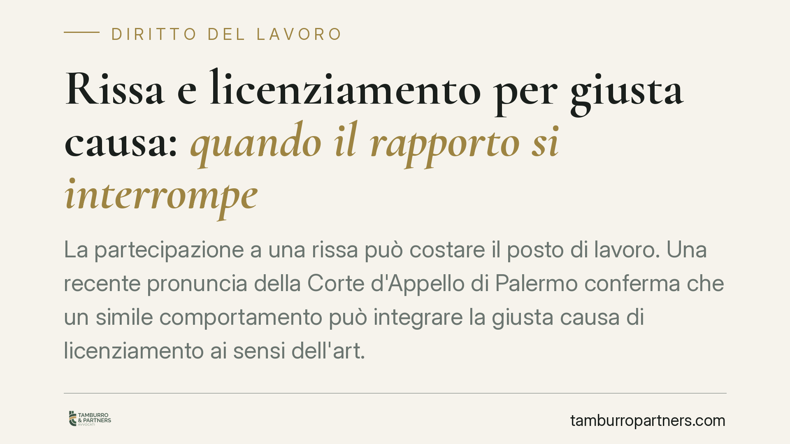
Rissa e licenziamento per giusta causa: quando il rapporto si interrompe
La partecipazione a una rissa può costare il posto di lavoro. Una recente pronuncia della Corte d'Appello di Palermo conferma che un simile comportamento può integrare la giusta ca…
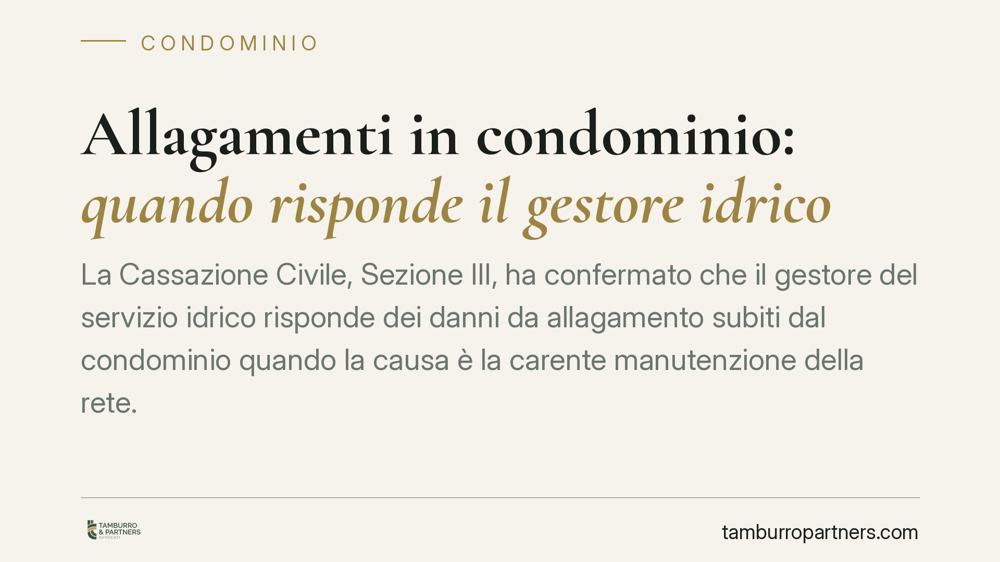
Allagamenti in condominio: quando risponde il gestore idrico
La Cassazione Civile, Sezione III, ha confermato che il gestore del servizio idrico risponde dei danni da allagamento subiti dal condominio quando la causa è la carente manutenzion…
Riconoscimento di debito: cosa comporta davvero la firma
Firmare un riconoscimento di debito non crea un nuovo obbligo, ma consolida quello esistente e sposta l'onere della prova a carico di chi firma. Una recente pronuncia del Tribunale…
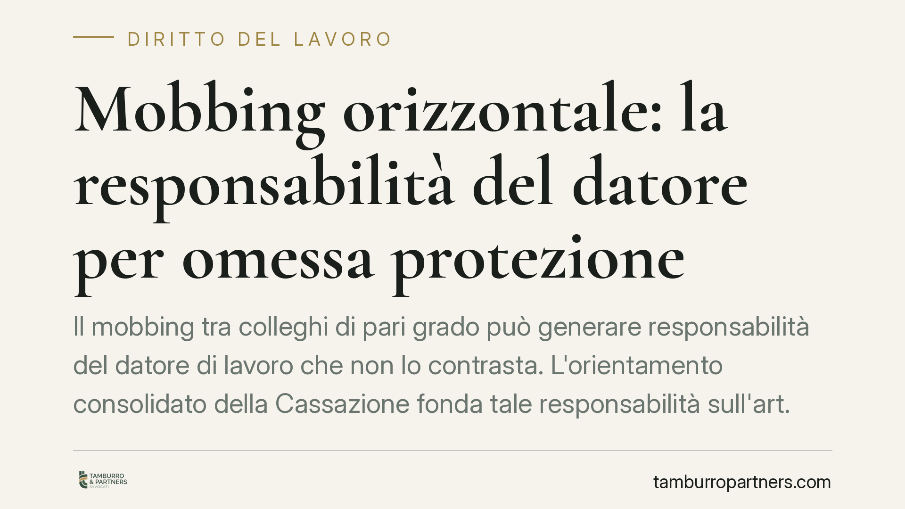
Mobbing orizzontale: la responsabilità del datore per omessa protezione
Il mobbing tra colleghi di pari grado può generare responsabilità del datore di lavoro che non lo contrasta. L'orientamento consolidato della Cassazione fonda tale responsabilità s…
Ritardo nella consegna dell'immobile: come provare il danno
La Corte d'Appello di Napoli torna sul tema della ritardata consegna dell'immobile e fissa un punto pratico: chi acquista e subisce un ritardo deve dimostrare il danno, ma può farl…
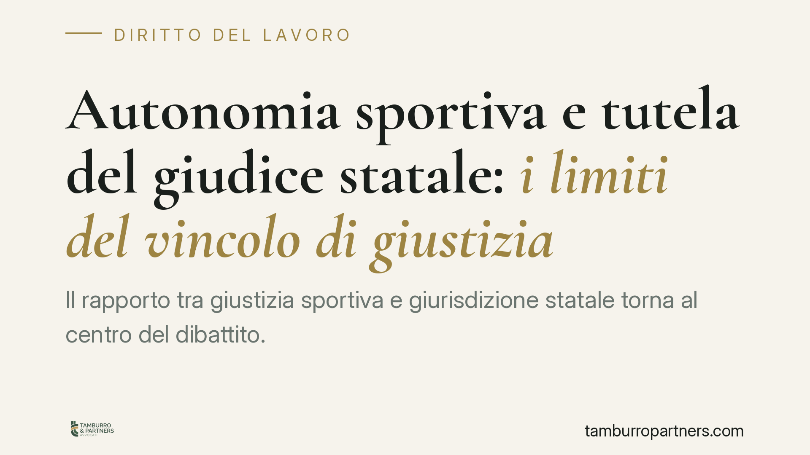
Autonomia sportiva e tutela del giudice statale: i limiti del vincolo di giustizia
Il rapporto tra giustizia sportiva e giurisdizione statale torna al centro del dibattito. La questione non è se il giudice ordinario possa sostituirsi agli organi tecnici delle fed…
Patto di non concorrenza e durata del rapporto: quando è valido
Il patto di non concorrenza può prevedere un compenso proporzionato alla durata del rapporto di lavoro? Una recente pronuncia della Sezione Lavoro della Cassazione risponde di sì, …
Debiti del condominio non pagati dall'amministratore: chi risponde?
Un fornitore resta insoluto e reclama il pagamento: il condominio scopre che l'amministratore non ha versato quanto dovuto. Chi risponde davvero del debito? La legge distingue tra …

Social bonus: perimetro delle spese agevolabili e stato dell'attuazione
Torna al centro del dibattito il social bonus, l'incentivo per chi dona a enti del terzo settore che recuperano immobili confiscati o beni pubblici inutilizzati. Circola l'ipotesi …

NASpI e detenuti lavoratori: l'INPS chiarisce quando spetta
L'INPS torna sul tema della NASpI per i detenuti che svolgono attività lavorativa all'interno degli istituti penitenziari. Il chiarimento riguarda i presupposti per l'accesso all'i…

Vizi evidenti nella compravendita: quando il compratore perde la garanzia
Chi compra un bene e non si accorge di un difetto evidente rischia di perdere la garanzia del venditore. Il codice civile distingue infatti tra vizi occulti e vizi facilmente ricon…

Consegna di denaro: prestito o donazione? Chi deve provare cosa
Trasferire denaro a un familiare o a un conoscente non significa automaticamente aver concluso un prestito. Chi pretende la restituzione deve dimostrare l'accordo di rientro delle …

Tregua estiva INPS 2026: quali atti si fermano e quali no
L'INPS ferma per l'estate 2026 l'invio di gran parte degli atti a datori di lavoro e contribuenti. Dal 27 luglio al 31 agosto restano sospese note di rettifica, diffide e avvisi di…

Sospensione dello stipendio quando il dipendente non lavora
Il datore di lavoro può legittimamente sospendere lo stipendio quando il dipendente non esegue la prestazione dovuta. Il fondamento è il carattere sinallagmatico del contratto e l'…